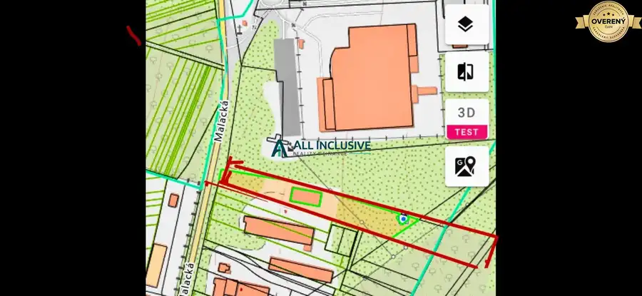
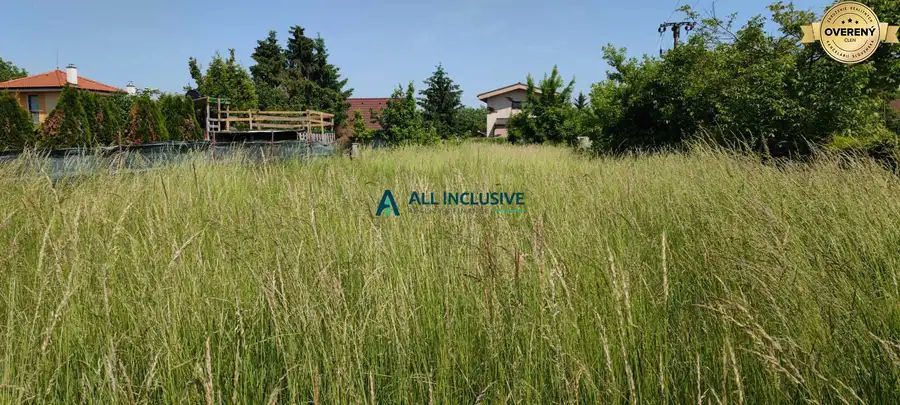
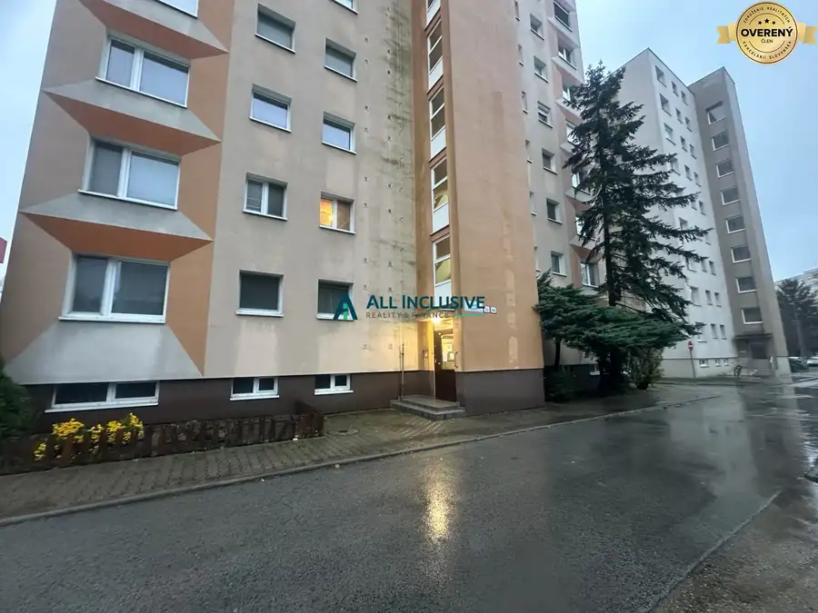

Ponúkame na predaj,2-garsónku na Stavbárskej ulici,v Bratislave
Vrakuňa, Bratislava
- Dispozícia2-izbový
- Plocha39.13 m²
- Poschodie7. z 10
- Stavčiastočne prerobený
- Vlastníctvoosobné
O nehnuteľnosti
Ponúkame na predaj priestrannú 2-garsónku s výmerou 40 m² na Stavbárskej ulici 42 v Bratislave. Byt sa nachádza na 7. poschodí v zrekonštruovanom a zateplenom bytovom dome s dvoma výťahmi.
Byt je zaujímavý najmä svojou prakticky upravenou dispozíciou, ktorá ponúka príjemné a funkčné bývanie.
DISPOZÍCIA A REKONŠTRUKCIA
Byt prešiel čiastočnou rekonštrukciou, ktorá zahŕňa:
* výmenu pôvodných okien za plastové okná,
* miernu zmenu dispozície bytu,
* posunutie priečky, vďaka čomu bola zväčšená kuchyňa,
* kuchyňa je prakticky oddelená od obývacej izby posuvnými presklenými dverami,
* v kuchyni a kúpeľni boli dodatočne osadené bojlery na ohrev teplej vody, čo umožňuje optimalizovať náklady na energie,
* v spálni sa nachádza vstavaná skriňa, ktorá poskytuje dostatok úložného priestoru.
ČIASTOČNE ZARIADENÝ
Byt sa predáva čiastočne zariadený. Súčasťou predaja zostáva:
* chladnička,
* umývačka riadu,
* práčka,
* obývacia stena,
* vstavaná skriňa v spálni.
Nový majiteľ tak môže byt využívať bez nutnosti okamžitého kompletného zariaďovania.
BYTOVÝ DOM
Bytový dom je zrekonštruovaný a zateplený. K dispozícii sú dva výťahy a vstup do domu je zabezpečený čipom.
HLAVNÉ VÝHODY
✓ 40 m²
✓ 7. poschodie
✓ prakticky upravená dispozícia
✓ zväčšená kuchyňa oddelená posuvnými presklenými dverami
✓ plastové okná
✓ vstavaná skriňa v spálni
✓ bojlery na ohrev teplej vody
✓ čiastočne zariadený byt
✓ práčka, chladnička a umývačka riadu v cene
✓ obývacia stena
✓ zrekonštruovaný a zateplený bytový dom
✓ 2 výťahy
✓ vstup na čip
CENA
111 900€
Cena je vrátane provízie realitnej kancelárie.
Byt je vhodný na vlastné bývanie aj ako investícia na prenájom.
V prípade záujmu o viac informácií alebo dohodnutie obhliadky nás neváhajte kontaktovať.
Parametre
| Celková rozloha | 39.13 m² |
|---|---|
| Úžitková plocha | 39.13 m² |
| Poschodie | 7/vyššie poschodie |
| Počet poschodí | 10 |
| Počet izieb | 2 |
| Vlastníctvo | osobné |
| Stav | čiastočne prerobený |
| Odvoz odpadu | áno |
| Plyn | nie |
| Kúpeľňa | sprchovací kút |
| Balkón | nie |
| Pivnica | nie |
| Výťah | áno |
| Parkovanie | verejné |
| Postavené z | tehla |
| Zariadenie | čiastočne |
| Zateplený objekt | áno |
| Energetický certifikát | nie |
| Okná | plastové |
| Dátum zverejnenia | 27. 9. 2026 |
Kde to je
Mohlo by Vás zaujímať

Pozemok6 576 600 €Na predaj stavebný pozemok Stupava Stupava 4805 m² Ponúkame na predaj stavebný pozemok, 120€ m2, nachádzajúci sa v Stupave, smer Lozorno, Malacká cesta, vedený v územnom pláne F3 - polyfunkcia, vhodný…
Pozemok7 199 900 €Na predaj pozemky na výstavbu RD v Bernolákove Bernolákovo 800 m² Ponúkame na predaj pozemok pre rekreačné domy s celoročným užívaním. Hľadáte ideálne miesto pre projekt, ktorý spája pokoj prírody s komfortom…
Byt10 215 000 €Na predaj 3-izbový byt v Šamoríne Šamorín 3-izbový66.37 m²8. podlažie Hľadáte priestranné bývanie vo výbornej lokalite s kompletnou občianskou vybavenosťou na dosah? Ponúkame Vám na predaj 3-izbový byt nachádzajúci sa…